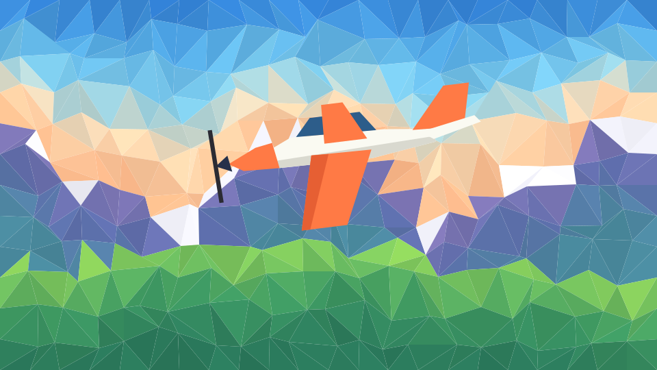

Cielo Abierto
Un simulador de vuelo donde despegar es fácil y aterrizar bien es todo un logro.
Se juega en ordenador, con teclado.

Vuela de verdad
- Física realista. Sustentación, pérdida, viento, flaps y compensador afectan al vuelo.
- Cabina completa. Velocímetro, horizonte artificial, altímetro, rumbo y variómetro.
- Dos aeropuertos. Con luces PAPI para guiar la aproximación.
- Seis modos. Del primer despegue a planear sin motor, con tus aterrizajes puntuados.
Mandos
WS Morro abajo / arriba
AD Alabear
QE Timón y rueda de morro
RF Más / menos gas
XZ Bajar / subir flaps
TG Compensador
Espacio Frenos
C Cambiar cámara
P Pausa